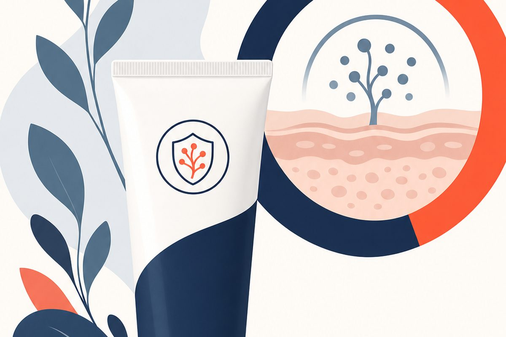

Key Takeaways
- Tinea is caused by dermatophyte fungi (Trichophyton, Microsporum, and Epidermophyton), not by worms. The clinical name (tinea corporis, tinea pedis, etc.) tells you the body site, not the organism.
- Most tinea of the body, groin, and feet responds to topical antifungal creams such as terbinafine, butenafine, or ketoconazole.[1] Use the product for its full labeled or prescribed course, even after the rash looks better.[5]
- Tinea capitis (scalp ringworm) needs oral antifungal therapy because topical agents do not penetrate the hair follicles. For onychomycosis (nail fungus), oral therapy is generally more effective than topical nail products, which have low cure rates.[1]
- Tinea incognito is a fungal infection whose appearance has been altered by topical steroids or other immunosuppressive medicines. It can lose its classic ring shape and be mistaken for eczema, psoriasis, lupus, or seborrheic dermatitis.[5]
- In children with tinea capitis, oral treatment is required. In the US, where Trichophyton causes more than 89% of cases, a 4 to 6 week course of oral terbinafine is a reasonable first choice for children without recent travel outside the country.[1] Pediatric terbinafine doses are set by weight.[4]
- Nail fungus treatment is long: oral terbinafine is taken for 12 weeks for toenails,[9] and judging whether the infection is cured takes 9 to 12 months because toenails grow slowly.[1]

Fungal skin infections are among the most common dermatologic conditions in clinical practice. In clinical experience, the bigger problem is often not the diagnosis but the pattern of partial treatment, premature stopping, and the complications that follow. A patient who uses an antifungal cream for three days instead of two weeks, or who is given a steroid cream for what is actually a fungal rash, often ends up with a significantly worse infection than when they started.
The word "tinea" simply means fungal infection of the skin, hair, or nails caused by dermatophytes. The full name identifies where on the body the infection is: tinea pedis on the feet, tinea capitis on the scalp, tinea unguium on the nails. The site involved largely determines how you treat it.
This guide covers the major types, how they're diagnosed, what the current evidence says about treatment, and the clinical traps that lead to prolonged, worsening infections when handled incorrectly, especially tinea incognito and scalp infections in children.
The Fungi Behind Tinea: Dermatophytes Explained
Three genera of fungi cause virtually all dermatophyte infections: Trichophyton, Microsporum, and Epidermophyton. Dermatophytes are keratinophilic, meaning they live on keratin, the structural protein in skin, hair, and nails.[4] This keratin dependence explains where these infections occur (surface skin, hair shaft, nail plate).
Trichophyton rubrum is the most frequent cause of dermatophyte skin and nail infection worldwide.[2] In the United States, Trichophyton causes more than 89% of tinea capitis cases. This matters because terbinafine may work better than griseofulvin against Trichophyton species, while griseofulvin may work better against Microsporum species, which are more common outside the United States, particularly in South America, Southern and Central Europe, Africa, and the Middle East.[1]
Dermatophytes are grouped by where they come from: people (anthropophilic species), animals (zoophilic species), and soil (geophilic species).[4] Microsporum canis, a zoophilic species carried by cats and dogs as well as puppies, kittens, and rabbits, remains the main cause of tinea capitis in many Mediterranean countries and should be considered in patients with recent animal contact.[4]
Trichophyton indotineae infections resistant to antifungal drugs are widespread in South Asia and are increasingly reported in Europe, North America, South America, and Africa. Ringworm caused by this species is often severe, covers large areas of the body, and is difficult to treat, and the organism often carries genetic mutations that make it resistant to terbinafine.[8] In the United States it remains uncommon; cases have occurred most often in people who traveled to South Asia or had contact with someone who did. Identifying it requires fungal culture and DNA sequencing, available only at select laboratories, and, based mainly on studies from India, itraconazole for up to 3 months is the preferred first-line treatment.[1] The CDC advises clinicians to ask about travel when severe or resistant ringworm is suspected and to consider antifungal susceptibility testing when symptoms do not improve with treatment.[8]
Types of Tinea by Body Location
Tinea Corporis (Body Ringworm)
Tinea corporis is the classic "ringworm": a red, scaly, itchy, ring-shaped plaque with an active border and central clearing.[1] It appears on smooth (glabrous) skin of the trunk, arms, or legs. The lesion expands outward, which is why the border is the most active zone and the best place to scrape for a KOH preparation. Itching is common but variable.
Topical terbinafine 1% once daily for 1 to 2 weeks is a first-line option for limited tinea corporis;[1] the over-the-counter terbinafine label directs once-daily use for 1 week for ringworm.[12] Over-the-counter clotrimazole 1% or miconazole 2% applied twice daily for 4 weeks are alternatives,[13, 14] although a 2025 review advises using butenafine or terbinafine instead because they work better at a similar cost.[1] Oral therapy is reserved for extensive disease, failed topical treatment, or a weakened immune system.[1]
Tinea Pedis (Athlete's Foot)
Tinea pedis (athlete's foot) is common. Chronic tinea pedis, the more common form, usually causes scaling, peeling, and redness between the toes; the "moccasin" pattern causes redness and thickened skin on the sole and sides of the foot; and acute infection can cause redness and softened skin between the toes, sometimes with painful blisters.[1]
Topical terbinafine is a first choice.[1] The over-the-counter terbinafine label directs twice-daily use for 1 week between the toes and for 2 weeks on the bottom or sides of the foot.[12] Recurrence is high without attention to footwear hygiene, moisture management, and treating any associated tinea unguium, which can re-seed the skin.
Tinea Cruris (Jock Itch)
Tinea cruris involves the inguinal folds, inner thighs, and perianal area. The scrotum is typically spared, and scrotal involvement may point instead to a candida (yeast) infection.[1] The advancing edge is sharply demarcated and may have a papular or vesicular component.
Topical antifungals applied twice daily for 10–14 days clear most cases.[3] Keeping the area dry, wearing breathable fabric, and avoiding tight clothing are essential supportive measures. Tinea pedis frequently coexists and should be treated simultaneously to prevent re-infection from the feet.
Tinea Capitis (Scalp Ringworm)
Tinea capitis infects the scalp and hair shafts, presenting most often in prepubertal children. The classic pattern is one or more scaly patches of hair loss with hairs broken at the skin line ("black dots"), the most common type in the United States and typically associated with Trichophyton; "gray patch" tinea is typically associated with Microsporum. Untreated tinea capitis can progress to a kerion: boggy, tender plaques and pustules on the scalp. Prompt treatment of kerion is critical to prevent scarring and permanent hair loss.[1]
Oral treatment is required for tinea capitis because topical agents do not penetrate the hair follicle.[4] This is a point I cannot overstate when speaking with parents who ask about just using a shampoo. An antifungal shampoo may reduce transmission, but it is an add-on to oral medication, not a cure on its own.[1] This is covered in detail in the section below on pediatric treatment.
Tinea Unguium / Onychomycosis (Nail Fungus)
Onychomycosis is a common cause of thickened, discolored toenails in adolescents and adults, and its treatment courses are long, with high failure rates and recurrence rates of 20% to 25%.[1] The classic distal subungual form causes thickened, brittle, discolored nails.[1] Toenails are affected far more often than fingernails.
The recommendation for patients: treating nail fungus is a long commitment. The best visible result comes some months after the infection is cured and treatment has ended, as healthy nail grows out.[9] Set that expectation early, because patients who see a still-thickened nail at their six-week follow-up frequently stop taking their medication, which is exactly the wrong decision.
Diagnosing Tinea: KOH Prep and Fungal Culture
Many tinea infections can be diagnosed clinically, but laboratory confirmation matters when the presentation is atypical, when first-line treatment has failed, or before starting oral antifungal therapy, especially in children or patients with liver disease. Testing is recommended before treating suspected nail fungus because the course is long and look-alike conditions are common.[1]
KOH Preparation (Potassium Hydroxide Prep)
The KOH prep is a quick, simple, and inexpensive office test. Skin scrapings, nail clippings, or hairs are placed on a slide with potassium hydroxide solution (typically 10% for skin scrapings and 40% for nail clippings) and examined under the microscope for fungal hyphae.[5]
Accuracy depends on the quality of the sample and the skill of the examiner. Adding dimethyl sulfoxide (DMSO) or a blue stain to the KOH solution makes fungal elements easier to see, and scales should be collected from the edge of the plaque rather than the center.[5]
Fungal Culture
Culture on Sabouraud agar or dermatophyte test medium (DTM) identifies the specific organism,[4] which can guide the choice between terbinafine and griseofulvin for tinea capitis.[1] Antifungal susceptibility testing for dermatophytes is not widely available.[8] The major drawback of culture is time: results can take 2 to 6 weeks, so tinea capitis is often treated empirically while results are pending.[1]
I perform a KOH prep when: (1) the diagnosis is uncertain, (2) the lesion is not responding to empiric topical treatment after 2 weeks, (3) I'm about to prescribe oral antifungals and want confirmation, or (4) the presentation looks like it could be tinea incognito. When testing or dermatology referral is impractical, a 2-week trial of topical antifungal (without a steroid), with follow-up to document improvement, is a reasonable alternative. If the lesion doesn't improve or clearly worsens, that redirects the workup.[1]
Tinea Incognito: The Steroid-Masked Infection
Tinea incognito is one of the more consequential diagnostic pitfalls in dermatology. The sequence is predictable: a patient presents with a scaly, itchy rash; the clinician (or the patient, using an OTC steroid) identifies it as eczema or contact dermatitis and applies a topical corticosteroid. The steroid suppresses the inflammatory response, which temporarily makes the rash less red and less itchy. The patient is initially satisfied. Then the rash returns, spreads, and looks nothing like a typical tinea lesion.
Mycological testing is the exit from this diagnostic loop. Because steroids mask the classic ring-shaped border, tinea incognito can mimic eczema, seborrheic dermatitis, lupus erythematosus, psoriasis, or other non-fungal skin conditions.[5] Confirming the diagnosis requires mycological examination (such as KOH microscopy or culture) after the topical steroid is stopped.[5]
Treatment involves two steps: stop the topical steroid or other immunosuppressive medicine, then treat the fungal infection with antifungals. When the infection has become more severe and recurrent, oral antifungal medication may be required.[5]
Combination antifungal-corticosteroid creams (such as clotrimazole-betamethasone) are widely available and frequently misused. Their use is generally discouraged: the steroid component is often high or medium potency, which can cause skin thinning or systemic side effects, and these creams may contribute to the emergence and spread of antifungal-resistant strains.[1] If you're unsure whether a rash is fungal or inflammatory, a plain antifungal cream (no steroid) is the safer empiric choice. If the rash is not fungal, it likely will not improve, or may worsen, with the antifungal, and that result itself points toward another diagnosis.[1]
Tinea Capitis in Children: Why Oral Treatment Is Non-Negotiable
Parents frequently ask whether a medicated shampoo will clear their child's scalp ringworm. The short answer is no, and this distinction is worth explaining clearly.
The dermatophyte in tinea capitis infects the hair shaft and follicle. Topical agents do not penetrate down to the hair follicle root, so tinea capitis always requires systemic (oral) treatment, and topical treatment is used only as an add-on.[4] Shampoos such as selenium sulfide 1% or 2.5%, ketoconazole 2%, or ciclopirox 1.5%, used for the first 2 weeks of oral treatment, may reduce transmission, but they are not substitutes.[1]
Choosing the Right Oral Agent
In the United States, where Trichophyton causes most cases, oral terbinafine is a reasonable first choice for tinea capitis in children without recent travel outside the country. Randomized trials have shown that shorter courses (4 to 6 weeks) of terbinafine are as effective and safe as griseofulvin, which has traditionally been given for 6 to 8 weeks.[1] The US terbinafine tablet label lists nail fungus as its indication,[9] so tinea capitis dosing follows published pediatric regimens, which are weight-based:[4]
| Child's Weight | Terbinafine Dose | Duration |
|---|---|---|
| 10–20 kg | 62.5 mg/day | 4–6 weeks (Trichophyton) |
| 20–40 kg | 125 mg/day | 4–6 weeks (Trichophyton) |
| 40 kg or more | 250 mg/day | 4–6 weeks (Trichophyton) |
Griseofulvin remains the treatment of choice when culture shows Microsporum.[1] Published pediatric regimens use 15–25 mg/kg/day of the microsize form (the better-absorbed ultramicrosize form is used at lower doses) for 6 to 12 weeks, taken with fatty foods such as whole milk or yogurt to improve absorption; headaches and stomach upset are the most common side effects, and the long course can reduce adherence.[4] These doses are higher than the US microsize label, which lists 10 mg/kg daily as usually adequate for children, gives 4 to 6 weeks for tinea capitis, and states that safety has not been established above 10 mg/kg daily or in children 2 years and younger. The label also contraindicates griseofulvin in pregnancy, porphyria, and liver failure.[11]
If a child develops a kerion, the tender, boggy, inflamed form of tinea capitis, prompt antifungal treatment is critical to prevent scarring and permanent hair loss.[1] Oral steroids (prednisolone 1 mg/kg per day for 7 days) have been used to reduce scaling and itching, but they did not shorten the time to clearance compared with griseofulvin alone and are not recommended as routine care for kerion.[4]
School attendance: experts differ on keeping children home. One review recommends that most children return to school or day care as soon as treatment has started, with about 1 week at home for the most contagious type of infection, and that they avoid sharing combs, hairbrushes, scarves, and hats.[4]
Antifungal Treatment: Topical vs. Oral
Topical Antifungals
For tinea on the body, groin, or feet without nail or hair follicle involvement, topical therapy is the appropriate first approach.[1] A 2025 review advises against topical clotrimazole or miconazole for tinea because topical butenafine and terbinafine work better at a similar cost.[1] Terbinafine is fungicidal to dermatophytes, meaning it kills the fungus rather than only stopping its growth.[4]
| Agent | Class | Typical Regimen | Best Used For |
|---|---|---|---|
| Terbinafine 1% (Lamisil AT) | Allylamine | Once daily for 1 week (body, groin); twice daily for 1–2 weeks (feet)[12] | Tinea corporis, tinea cruris, tinea pedis; first choice[1] |
| Butenafine 1% (Lotrimin Ultra) | Benzylamine | Once daily, 1–4 weeks[1] | Tinea pedis, tinea corporis, tinea cruris |
| Clotrimazole 1% | Azole | Twice daily; 2 weeks (groin), 4 weeks (body, feet)[13] | Smooth-skin tinea; OTC. Less effective than terbinafine or butenafine[1] |
| Miconazole 2% | Azole | Twice daily; 2 weeks (groin), 4 weeks (body, feet)[14] | Smooth-skin tinea; OTC. Less effective than terbinafine or butenafine[1] |
| Ketoconazole 2% | Azole | Once daily, 2–4 weeks[1] | Tinea corporis, tinea cruris, tinea pedis[1] |
| Ciclopirox 8% lacquer | Hydroxypyridone | Once daily, up to 48 weeks[1] | Onychomycosis; low cure rates (29%–36%)[1] |
Complete the full labeled or prescribed course even if the rash looks cleared. Reviews stress finishing treatment to eradicate the infection, even when symptoms improve earlier.[5]
Oral Antifungals: When They're Required
Oral therapy is used for tinea capitis and most onychomycosis, and for skin tinea when disease is extensive, topical treatment has failed, or the immune system is weakened.[1]
| Agent | Indication | Dose & Duration | Key Notes |
|---|---|---|---|
| Terbinafine 250 mg | Onychomycosis, tinea capitis, extensive tinea | 250 mg once daily for 6 weeks (fingernail) or 12 weeks (toenail)[9]; 4–6 weeks for tinea capitis[1] | First-line for onychomycosis and US tinea capitis.[1] Fungicidal.[4] Liver failure, some cases leading to transplant or death, has been reported; not recommended in chronic or active liver disease, and ALT and AST testing is advised before starting. Taste disturbance in 2.8% (vs 0.7% with placebo); taste or smell loss can occur.[9] |
| Itraconazole 200 mg | Onychomycosis (second-line), tinea capitis (alternative), extensive tinea[1] | Toenail: 200 mg once daily for 12 weeks. Fingernail only: two 1-week courses of 200 mg twice daily, separated by 3 weeks[10] | Less effective than terbinafine for mycological cure in a large meta-analysis.[1] Boxed warning: not for nail fungus in people with a history of heart failure; many drug interactions. Take capsules after a full meal.[10] |
| Griseofulvin | Tinea capitis | Microsize, US label: 10 mg/kg daily in children, 4–6 weeks for tinea capitis[11]; published pediatric regimens: 15–25 mg/kg/day for 6–12 weeks[4] | Preferred for Microsporum.[1] Take with a high-fat meal. Contraindicated in pregnancy, porphyria, and liver failure.[11] Headache and GI upset are the most common side effects; long courses reduce adherence.[4] |
Onychomycosis: The Long Game
Nail fungus is the condition where patient education matters most, because the timeline is counterintuitive. The optimal visible result is seen some months after mycological cure and the end of treatment, because healthy nail has to grow out.[9] For toenails, assessing cure takes 9 to 12 months.[1]
The recommendation for patients: "Think of the drug as pulling up the weed by the root. But the old dead plant is still there, and it just has to grow out. Keep your follow-up appointments and don't judge success by how the nail looks at the end of your pill course."
Pulse Dosing with Itraconazole
Itraconazole builds up in the nail plate, which is what makes intermittent pulse dosing possible. In a randomized study of 50 patients with toenail onychomycosis, the drug was detected in the distal nail after the first pulse and stayed in the nail plate at levels above 300 ng/g for several months after the last pulse.[6]
A pulse is 400 mg/day (200 mg twice daily) for 1 week each month. In that study, three or four monthly pulses for toenails produced clinical cure in 76% to 84% of patients and negative KOH and culture results in 72% to 80%.[6] A pooled overview reported a 77% mycologic cure rate 12 months after starting three pulses for toenails (1,389 patients) and 87% after two pulses for fingernails.[7] On the US label, the pulse regimen (two pulses) is listed only for fingernail infections; toenail infections are labeled for 200 mg once daily for 12 weeks.[10]
Confirming the Diagnosis Before Starting Oral Therapy
Not all thick, discolored nails are fungal. Onychomycosis can be confused with chronic trauma or psoriasis, and involvement of only the little toe suggests trauma rather than fungus.[1] Before committing to weeks of oral terbinafine or itraconazole, confirm the diagnosis: both labels call for nail specimens for KOH preparation, fungal culture, or nail biopsy before treatment.[9, 10]
Tinea vs. Eczema vs. Psoriasis
These three conditions share enough visual overlap to generate frequent misdiagnosis. The consequences matter: treating eczema or psoriasis with a topical steroid is correct; treating tinea with a steroid makes it dramatically worse. Here's a practical clinical comparison:
| Feature | Tinea | Eczema (Atopic Dermatitis) | Psoriasis |
|---|---|---|---|
| Border | Sharply raised, advancing, scaly edge with central clearing | Indistinct, merges with surrounding skin | Well-defined, sharp plaque border |
| Scale | Fine scale at periphery; less at center | Fine scale, may weep or crust | Thick, silvery-white ("micaceous") scale |
| Distribution | Asymmetric; spreads outward from point of inoculation | Symmetric; inner elbows, behind knees, face, neck | Elbows, knees, scalp, sacrum, nails |
| Itching | Moderate; variable | Intense; worse at night | Burning or stinging; less intense itch than eczema |
| KOH prep | Positive (hyphae visible) | Negative | Negative |
| Response to steroids | Temporary improvement, then worsening and spread (tinea incognito) | Improves with steroids | Improves with steroids; rebound possible on stopping |
| Triggers/history | Animal contact, shared items, locker rooms, warm/moist skin | Allergens, soaps, stress, known atopic history | Stress, infection, skin trauma, family history |
The single most useful differentiating test is a KOH preparation. When the clinical picture is unclear and you're considering starting a corticosteroid, do the KOH prep first. It's rapid, inexpensive, and the result changes management in a clinically significant way.
Prevention: Moisture, Hygiene, and Pets
Dermatophytes thrive in warm, moist environments. Preventing tinea is largely about managing those conditions and limiting contact with known sources.
Moisture Management
Athlete's foot and tinea cruris are both strongly associated with persistent moisture on the skin. Dry thoroughly between the toes after bathing. Change out of wet workout clothes promptly. Wear moisture-wicking socks and change them if they become wet. Antifungal powders (miconazole or tolnaftate formulations) in shoes and on the feet can reduce recurrence risk in people with a history of tinea pedis.
Personal Items and Shared Spaces
Don't share towels, washcloths, clothing, hats, combs, or nail clippers. Tinea capitis is most often caught from an infected child, either directly or through shared items such as combs, brushes, and hats.[4] In shared locker rooms and pool areas, wear flip-flops or shower shoes. These measures are low-effort and help reduce transmission.
Pet Transmission
Zoophilic dermatophytes, particularly Microsporum canis from cats and dogs, are a meaningful source of tinea in households with pets.[4] A cat or dog with patchy hair loss, scaly skin, or bald spots on the muzzle should be evaluated by a veterinarian. Family members with unexplained tinea corporis, especially on the face or arms, should consider their pet as a potential source. Pets should be examined and treated as needed to prevent ongoing reinfection of household contacts.[4]
Household and Clothing Decontamination
For tinea capitis in children, viable fungal spores have been found on floors, chairs, clothing, beds, pillows, brushes, and combs in affected homes. Launder washable items such as bedding, vacuum carpets, and disinfect or discard brushes, combs, and hair accessories; for items that can be boiled, 5 minutes in boiling water is sufficient.[4]
Dermatology and Tinea via Telehealth
Many tinea infections, particularly tinea corporis, tinea cruris, and uncomplicated tinea pedis, are well-suited to telehealth evaluation. A physician can review photos of the rash, assess the clinical pattern, evaluate the history (duration, prior treatment, associated symptoms), and prescribe topical or oral antifungals without an in-office visit.
Telehealth has specific practical value for tinea because the most common treatment error is incorrect diagnosis followed by a steroid application. Getting an accurate diagnosis early, even by video, helps prevent the tinea incognito cascade. A patient who calls in with a ring-shaped scaly rash can have that diagnosis confirmed and receive an appropriate antifungal prescription the same day.
Conditions requiring in-person evaluation include: tinea capitis where a culture is needed to guide therapy (especially if Microsporum is suspected), kerion requiring physical examination, onychomycosis where nail clipping and KOH are needed for confirmation before committing to 12 weeks of oral antifungals, and cases with suspected secondary bacterial infection. The TeleDirectMD team can assess which of these apply to your situation and coordinate referral when needed.
For questions about tinea or fungal skin infections, contact us at 678-956-1855 or contact@teledirectmd.com.
Red Flags: When to Seek Prompt Evaluation
- A rash that spreads despite 2 weeks of topical antifungal. This suggests tinea incognito (if steroids were applied), an incorrect diagnosis, or a resistant organism.
- A child with scalp hair loss and scaling. Do not attempt topical treatment alone; tinea capitis requires oral therapy, guided by testing when possible.
- A tender, boggy scalp mass (kerion). There is a risk of permanent scarring, so prompt oral antifungal treatment is needed.
- Nail changes in a diabetic patient. Nail fissures can serve as entry points for bacterial infection; confirm the diagnosis and treat.
- Widespread tinea in an immunocompromised patient. People with HIV, an organ transplant, or high-dose steroid treatment are at risk for invasive or extensive dermatophytosis requiring specialist management.
- Prior treatment with a combination antifungal-steroid cream. The infection may now have atypical features; KOH and culture are needed before restarting treatment.
Frequently Asked Questions
No, the name is misleading. Ringworm is a fungal infection caused by dermatophytes, not worms of any kind. The name comes from the characteristic ring-shaped rash that tinea corporis can produce on smooth skin. The fungi responsible (Trichophyton, Microsporum, and Epidermophyton) feed on keratin, the protein in your skin, hair, and nails. No parasitic worms are involved.
For tinea on the body, groin, or feet, yes. Over-the-counter creams containing terbinafine 1%, clotrimazole 1%, or miconazole 2% are labeled to cure most athlete's foot, jock itch, and ringworm.[12, 13, 14] Follow the label: terbinafine cream is used for 1 week (or 2 weeks on the bottom or sides of the foot), and clotrimazole or miconazole for 2 weeks for jock itch or 4 weeks for athlete's foot and ringworm.[12, 13, 14] Keep using it for the full course even if the rash looks better.[5] Scalp ringworm needs prescription oral treatment, and the terbinafine cream label says not to use it on the nails or scalp;[12] for nail infections, oral therapy is generally more effective than topical products.[1]
Over-the-counter topical courses run 1 to 4 weeks depending on the product and location; if jock itch has not improved within 2 weeks, or athlete's foot or ringworm within 4 weeks, the labels advise asking a doctor.[12, 13] Oral terbinafine for tinea capitis is usually given for 4 to 6 weeks.[1] Nail fungus is the slowest: oral terbinafine is taken for 12 weeks for toenails, but the best visible result comes some months after treatment ends, as healthy nail grows out.[9] Judging whether toenail fungus is cured takes 9 to 12 months.[1] A nail that still looks abnormal at the end of the pill course does not mean treatment failed; it means nails grow slowly.
Yes. Dermatophyte infections spread through direct skin-to-skin contact, contact with contaminated items (towels, combs, locker room floors), and from infected animals. Tinea capitis spreads easily among children sharing hats or combs. Cats and dogs with patchy hair loss or scaly skin can transmit Microsporum canis to family members. Avoid sharing personal items, wear footwear in shared wet areas, and have any household pet with suspicious skin changes evaluated by a veterinarian.
Several possibilities: a steroid cream may have been applied, which suppresses the local immune response and can let the fungus grow and spread while masking it (tinea incognito); treatment may have been stopped too early; or reinfection may be coming from shared bed linens, towels, clothes, or shoes.[5] Toenail fungus can continuously re-seed a treated skin infection if it isn't addressed at the same time. Confirming whether you're still dealing with a fungal infection takes a mycological test, such as a KOH preparation or culture, done after the steroid is stopped.[5]
Treatment is optional and depends on your preference, but oral therapy is generally more effective than topical therapy.[1] Prescription topical options include ciclopirox nail lacquer and tavaborole, which have low cure rates (29%–36% and 31%–36%), and efinaconazole, which has a mycological cure rate of 61.6% but is expensive.[1] For most patients, oral terbinafine is preferred over itraconazole;[1] the labeled regimen is 250 mg once daily for 6 weeks (fingernails) or 12 weeks (toenails).[9] Confirm the diagnosis with nail testing (KOH preparation, fungal culture, or nail biopsy) before starting oral therapy.[9]
Tinea capitis infects the hair shaft and follicle. Topical creams do not penetrate down to the hair follicle root, so oral antifungal therapy is always required.[4] Antifungal shampoos used alongside oral therapy for the first 2 weeks may reduce transmission, but they are an add-on, not a replacement.[1] In the US, where Trichophyton causes most cases, oral terbinafine dosed by weight is a reasonable first choice.[1, 4]
Tinea typically has a raised, scaly border with some central clearing, spreads outward asymmetrically, and often has a traceable exposure (gym, pet, contact). Eczema tends to be symmetric, affects skin folds (inner elbows, behind knees), and is associated with allergens or soaps. Psoriasis produces well-defined, thick, silvery-scaled plaques on the elbows, knees, and scalp. The definitive differentiator is a KOH prep, which shows fungal hyphae in tinea and is negative in eczema and psoriasis. If a 2-week trial of a plain topical antifungal doesn't help or makes things worse, reconsider the diagnosis.[1]
References
- Caplan AS, Gold JAW, Smith DJ, Ely JW. Diagnosis and Management of Tinea Infections. American Family Physician. 2025;112(4):382–392. https://pmc.ncbi.nlm.nih.gov/articles/PMC12707599
- Nenoff P, Krüger C, Ginter-Hanselmayer G, Tietz HJ. Mycology - an update. Part 1: Dermatomycoses: causative agents, epidemiology and pathogenesis. J Dtsch Dermatol Ges. 2014;12(3):188-209. https://pubmed.ncbi.nlm.nih.gov/24533779/
- American Academy of Dermatology. Ringworm: Diagnosis and Treatment. Accessed November 2026. https://www.aad.org/public/diseases/a-z/ringworm-treatment
- Bennassar A, Grimalt R. Management of tinea capitis in childhood. Clinical, Cosmetic and Investigational Dermatology. 2010;3:89–98. https://pmc.ncbi.nlm.nih.gov/articles/PMC3047946/
- Zacharopoulou A, Tsiogka A, Tsimpidakis A, et al. Tinea Incognito: Challenges in Diagnosis and Management. Journal of Clinical Medicine. 2024;13(11):3267. https://pmc.ncbi.nlm.nih.gov/articles/PMC11172699/
- De Doncker P, Decroix J, Piérard GE, et al. Antifungal pulse therapy for onychomycosis. A pharmacokinetic and pharmacodynamic investigation of monthly cycles of 1-week pulse therapy with itraconazole. Archives of Dermatology. 1996;132(1):34-41. https://pubmed.ncbi.nlm.nih.gov/8546481/
- De Doncker P, Gupta AK, Marynissen G, et al. Itraconazole pulse therapy for onychomycosis and dermatomycoses: an overview. Journal of the American Academy of Dermatology. 1997;37(6):969-974. https://pubmed.ncbi.nlm.nih.gov/9418766/
- Centers for Disease Control and Prevention. Clinician Brief: Emerging Ringworm. Last reviewed October 13, 2026. Accessed November 2026. https://www.cdc.gov/ringworm/hcp/clinical-overview/emerging-ringworm-facts-for-clinicians.html
- Terbinafine hydrochloride tablets, 250 mg. Prescribing information (Dr. Reddy's Laboratories). DailyMed, updated December 19, 2024. Accessed November 2026. https://dailymed.nlm.nih.gov/dailymed/drugInfo.cfm?setid=e0b309a5-bebe-c6da-2847-bda21aa488b1
- Itraconazole capsules, 100 mg. Prescribing information (AvPAK). DailyMed, updated January 11, 2026. Accessed November 2026. https://dailymed.nlm.nih.gov/dailymed/drugInfo.cfm?setid=68165d90-953c-e2f5-e053-2a91aa0ada25
- Griseofulvin oral suspension USP (microsize), 125 mg/5 mL. Prescribing information (Actavis Pharma). DailyMed, label updated September 30, 2023. Accessed November 2026. https://dailymed.nlm.nih.gov/dailymed/drugInfo.cfm?setid=af318d5d-cc39-4a63-a590-b87c50f2694f
- Terbinafine hydrochloride cream 1% (over the counter). Drug Facts label (Preferred Pharmaceuticals). DailyMed, updated October 9, 2026. Accessed November 2026. https://dailymed.nlm.nih.gov/dailymed/drugInfo.cfm?setid=6016e546-6c02-4af0-888c-c0899865c5f0
- Clotrimazole cream USP 1% (over the counter). Drug Facts label (Sun Pharmaceutical Industries). DailyMed, updated July 3, 2025. Accessed November 2026. https://dailymed.nlm.nih.gov/dailymed/drugInfo.cfm?setid=a3a5cbf5-cabb-48d8-8877-74a97f7c0f57
- Miconazole nitrate cream USP 2% (over the counter). Drug Facts label (Cardinal Health). DailyMed, updated November 25, 2025. Accessed November 2026. https://dailymed.nlm.nih.gov/dailymed/drugInfo.cfm?setid=776ca76a-a6cc-5238-e053-2a91aa0abfcb